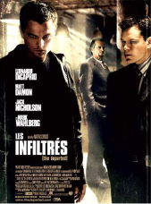
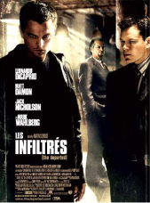

Le réalisateur
Martin Scorsese est un réalisateur américain des années 70 reconnu dans son milieu. Il a fait de nombreux films.
Martin Scorsese est un réalisateur américain né le 17 novembre 1942 à New York. Il a réalisé plus de 25 films. Ses parents sont d’origine sicilienne. Il passe son enfance dans le quartier de Little Italy. Ce lieu sera une véritable source d’inspiration pour lui. Après avoir passé une enfance difficile suite à une maladie, Martin Scorsese est diplômé de l’université de New York
"Il a réalisé plus de 25 films."
Il commence sa carrière dans le cinéma comme monteur jusqu’à son premier long métrage, “Who’s That Knocking At My Door?”. Ce film retient l’attention d’un légendaire producteur : Roger Carman. Carman qui lui demande de superviser “Bertha Boxcar” en 1972. En 1973, sa carrière est propulsée grâce au film “Mean Street” qu’il a filmé. En 1976, Martin Scorsese reçoit la palme d’or à Cannes avec “Taxi Driver”. York
Martin Scorsese est un des cinéastes américains les plus importants et influents de sa génération. C’est l’une des figures immanquables des années 70, il est reconnu pour son audace et sa force. Dans ses films, il aborde des sujets divers et variés comme l’identité italo-américain, les notions catholiques, la rédemption et bien d’autres thèmes. Il travaille avec les plus grands acteurs tel que Robert de Niro ou encore Paul Newman. En 1997, il reçoit le Lifetime Achievement Award, une récompense destinée à l’ensemble de sa carrière.
"Martin Scorsese est un des cinéastes américains les plus importants et influents de sa génération."
En 2013, Martin Scorsese et Leonardo DiCaprio travaillent ensemble pour le film : “Le Loup de Wall Street”. Le cinéaste met en avant la vie décadente de Jordan Belfort, un trader américain interprété par Leonardo DiCaprio. Martin Scorsese arrive à faire croire au spectateur que le sort de Jordan Belfort est enviable. Cela démontre son talent de réalisateur. Le film rencontre un énorme succès. Martin Scorsese reçoit de nombreuses nominations mais la plus importante est celle pour la Cérémonie Des Oscars 2014. Il est nominé pour l’oscar du meilleur Réalisateur pour ce film.
"Il est nominé pour l’oscar du meilleur Réalisateur pour ce film."
Galerie des films du même réalisateur:
 

Crédits affiches: AlloCiné